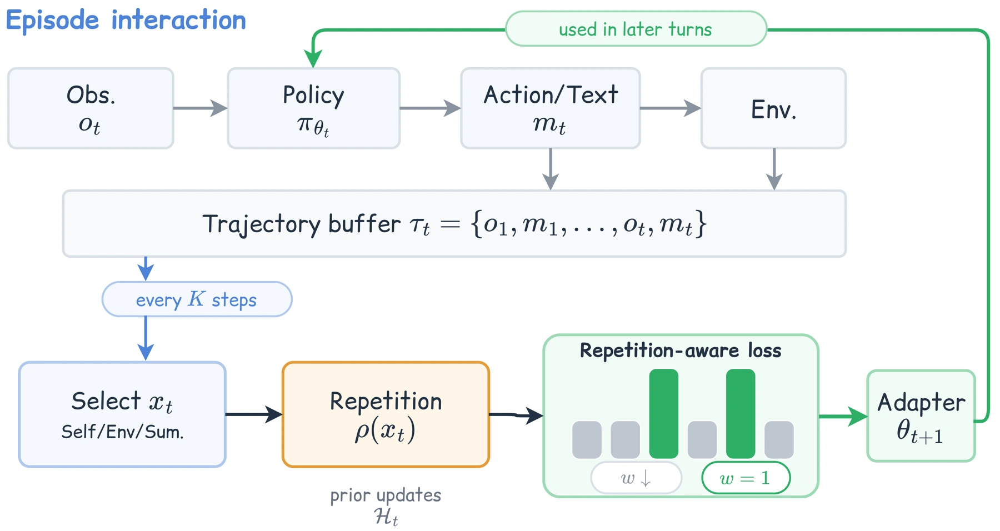
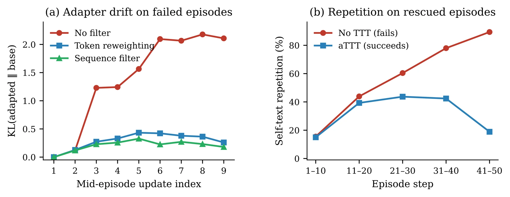

An agent can know how to solve a task and still lose its way during a long interaction. Failed actions recur, familiar states are revisited, and previously useful strategies disappear. Updating model weights during execution could help, but learning repeatedly from the same unproductive trajectory can reinforce the problem.
智能体可能具备完成任务的能力，却在长时间交互中逐渐偏离方向：重复失败的动作、重新访问熟悉的状态，也忘记原本有效的策略。在执行过程中更新模型权重有望改善这一问题，但反复学习同一条无效轨迹，也可能强化错误。
The question is therefore not just whether an agent should learn during a task, but which parts of its experience are worth learning from.
因此，问题不只是智能体是否应在任务中学习，更是哪部分经历值得被学到。
Learning from what is new从新的经验中学习
aTTT adjusts the training loss at token level. Tokens belonging to n-grams encountered in earlier updates receive less weight; novel tokens retain their full weight. This makes the adaptation process sensitive to whether the episode is producing new information. A concurrent serving system uses runtime LoRA updates to support learning inside live episodes.
aTTT 在词元层面调整训练损失：对属于此前更新中已出现的 n-gram 的词元降低权重，新词元则保留完整权重。这样，适应过程就能区分当前轨迹是否提供了新信息。并发服务系统通过运行时 LoRA 更新，让学习发生在正在执行的任务中。
The update signal can be the agent’s own trajectory, observations from the environment or a summary of the interaction. These signals have different failure modes: self-generated text can repeat a bad decision, while environment feedback may contain genuinely new evidence. aTTT does not simply discard every repeated episode. It reduces the influence of already-seen token patterns within an update, preserving the parts of the experience that still carry information.
更新信号可以来自智能体自身轨迹、环境观测或交互摘要。它们具有不同失效方式：自生成文本可能重复错误决策，环境反馈则可能包含新证据。aTTT 不是简单丢弃每个重复片段，而是在一次更新内部降低已见 token 模式的影响，保留仍然包含信息的部分。
{kind=link}

Testing adaptation inside an episode在任务内部检验在线适应
The experiments contrast two kinds of feedback: immediate household-task feedback in ALFWorld and delayed software verification in SWE-bench Lite. ReAct, static pre-rollout adaptation and unfiltered online training form the baselines. Repetition-aware token weighting is also compared with dropping entire repeated updates. Success rates are averaged over three seeds; episode-specific LoRA adapters are reset between tasks, so improvements do not accumulate across the benchmark.
实验对比两类反馈：ALFWorld 家务任务的即时反馈，以及 SWE-bench Lite 软件任务的延迟验证。基线包括 ReAct、执行前静态适应和未过滤的在线训练，同时对比整段过滤与重复感知的 token 加权。成功率取三个随机种子的平均值；每个任务结束后重置 LoRA，因此收益不是在整个基准上持续累积训练得到的。
Preserving capability on longer tasks在长任务中保持能力
The paper reports success-rate gains of up to 5.0 percentage points on ALFWorld and 4.9 on SWE-bench Lite, with cost limited to 1.9 times the no-TTT baseline. Improvements concentrate on tasks within the model’s existing competence: the evidence points to preserving abilities over long trajectories, rather than acquiring entirely new ones.
论文报告：ALFWorld 和 SWE-bench Lite 上的成功率最多分别提高 5.0 和 4.9 个百分点，成本控制在不使用 TTT 时的 1.9 倍。收益主要集中于模型本来就具备能力的任务，说明该方法更擅长在长轨迹中保持能力，而非获得全新的能力。
{kind=link}

The limits of learning on the fly即时学习的边界
The useful lesson is that more experience is not automatically better training data. Adaptation helps when it preserves a capability that repetition would otherwise erode. For RSI, this is a bounded mechanism for improving behavior within an episode, not evidence of open-ended recursive self-improvement. The next question is how reliably novelty measures can distinguish productive exploration from irrelevant variation.
关键启示是，更多经历并不自动等于更好的训练数据。在线适应的价值在于保留可能被重复轨迹侵蚀的能力。从 RSI 角度看，这是任务内改善行为的有限机制，而不是开放式递归自我改进的证据。接下来的问题是，新颖性信号能否稳定区分有效探索与无关变化。
Paper & authors论文与作者
No Time Like the Present: Agentic Test-Time Training for LLM Agents ↗
Cite this work
@misc{wang2026timelikepresentagentic,
title = {No Time Like the Present: Agentic Test-Time Training for LLM Agents},
author = {Yanbo Wang
and Jinhua Hao
and Yuze Shi
and Kun Yuan
and Ming Sun},
year = {2026},
eprint = {2607.03441},
archivePrefix = {arXiv},
primaryClass = {cs.LG},
url = {https://arxiv.org/abs/2607.03441}
}